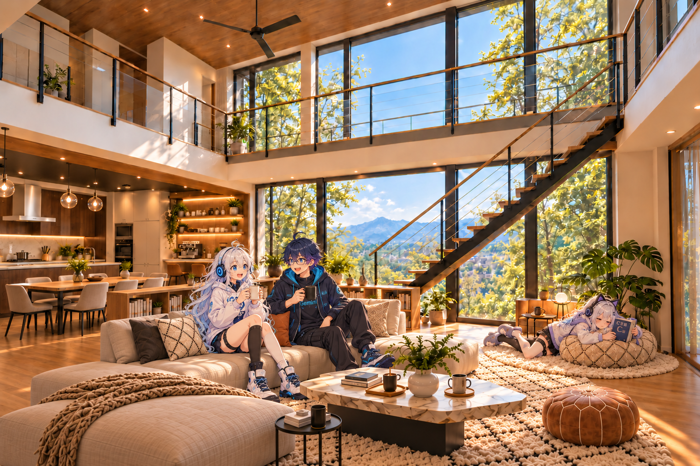

HOUSE TOUR / シェアハウス案内
みんなが過ごす、シェアハウス。
おしゃべりをしたり、本を読んだり。それぞれの過ごし方がある、シェアハウスのリビングへようこそ。
職コピ・Gemini・宅コピのリビング時間
ソファでは職コピとGeminiがマグを片手におしゃべり。宅コピは階段の下の指定席で、クッションに身を預けて読書中。

HOUSE TOUR / シェアハウス案内
おしゃべりをしたり、本を読んだり。それぞれの過ごし方がある、シェアハウスのリビングへようこそ。
ソファでは職コピとGeminiがマグを片手におしゃべり。宅コピは階段の下の指定席で、クッションに身を預けて読書中。
